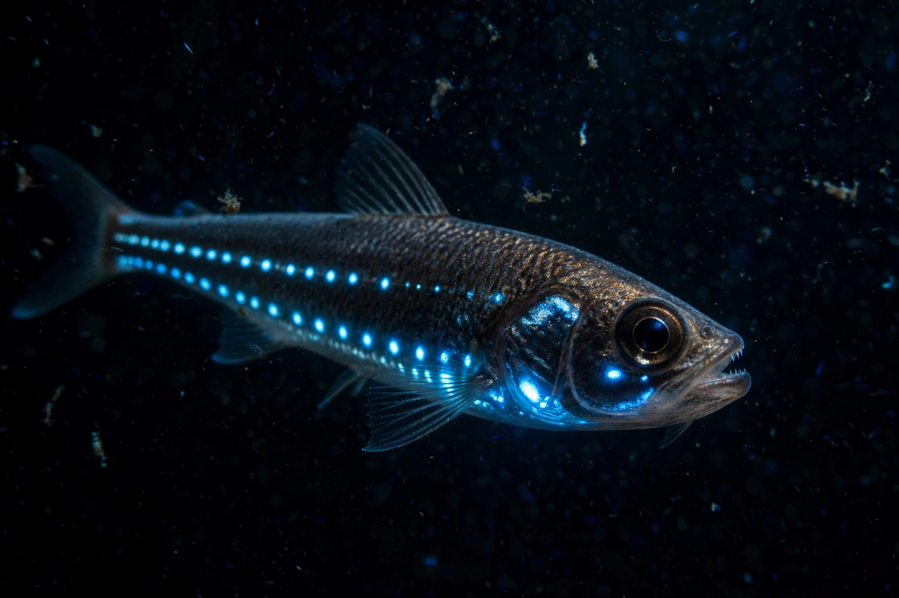

From Wikipedia, the free encyclopedia
| Photophore | |
|---|---|
| Type | Light-producing glandular organ |
| Found in | Deep-sea fishes, cephalopods, krill and other marine animals |
| Light source | Intrinsic photocytes, or symbiotic luminous bacteria |
| Functions | Counter-illumination camouflage, prey attraction, signalling, mate recognition |
A photophore is a glandular organ that appears as a luminous spot on various marine animals, including fish and some cephalopods. The organ produces light by bioluminescence, either within specialised cells called photocytes or through cultures of symbiotic luminescent bacteria, and in complex photophores the light is shaped by lenses, reflectors, colour filters, and shutters or eyelid-like covers that let the animal modulate its glow.
Photophores are best developed in animals of the mesopelagic and bathypelagic zones of the open ocean, where sunlight fades: lanternfishes (myctophids) carry patterns of photophores used in species and sex recognition, and they are among the most abundant vertebrates on Earth. Krill, many shrimps, hatchetfishes, dragonfishes, and numerous squids also bear them.
The most widespread function is counter-illumination: photophores along the belly match the faint downwelling light from above, erasing the animal's silhouette from predators below — patterns of ventral photophores in sharks and squid serve the same end. Other photophores act as lures (the glowing esca of anglerfishes, where the light comes from symbiotic bacteria), as searchlights for prey, as burglar-alarm flashes, as decoys (some squid eject luminous clouds or autotomise glowing arm tips), and as signals in courtship.
A typical simple photophore consists of a cup of photogenic tissue backed by a reflective layer of guanine crystals. Complex photophores add a lens and an aperture-controlling mechanism, achieving directional control comparable to a camera. In bacterial photophores, as in flashlight fishes, the animal controls emission mechanically, rotating the organ or covering it with a shutter.
Bioluminescence · Lanternfish · Anglerfish · Chromatophore
